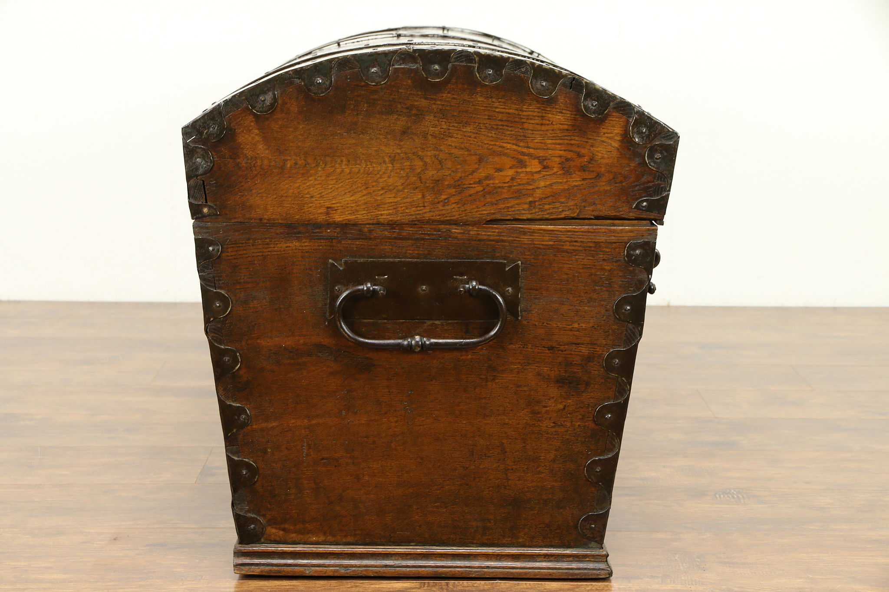
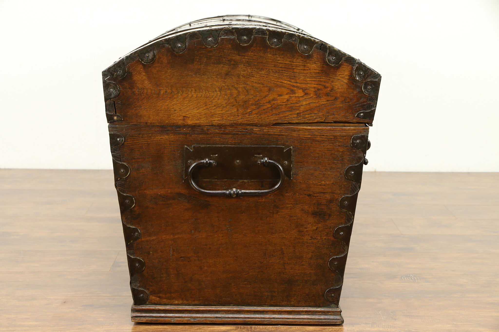
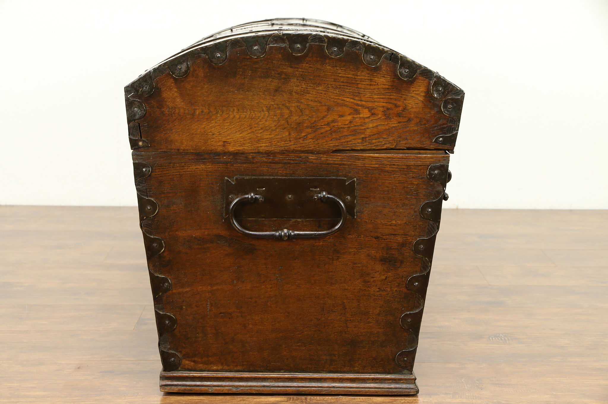

Reference Images (Real Chest)
Source images of the real treasure chest used as reference (front/top/right/back). These are photographs of an actual object, per the spec.

 


Source images of the real treasure chest used as reference (front/top/right/back). These are photographs of an actual object, per the spec.

Several views showing topology and edge flow.


Several views with materials and lighting applied.


Two embedded videos per project requirements – one showing wireframe and one showing smooth shading of the closed chest.